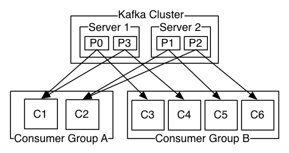

Kafka is a distributed streaming platform. What exactly does that mean?
We think of a streaming platform as having three key capabilities:
- It lets you publish and subscribe to streams of records. In this respect it is similar to a message queue or enterprise messaging system.
- It lets you store streams of records in a fault-tolerant way.
- It lets you process streams of records as they occur.
What is Kafka good for?
It gets used for two broad classes of application:
- Building real-time streaming data pipelines that reliably get data between systems or applications
- Building real-time streaming applications that transform or react to the streams of data
To understand how Kafka does these things, let's dive in and explore Kafka's capabilities from the bottom up.
First a few concepts:
- Kafka is run as a cluster on one or more servers.
- The Kafka cluster stores streams of records in categories called topics.
- Each record consists of a key, a value, and a timestamp.
Kafka has four core APIs:
- The Producer API allows an application to publish a stream records to one or more Kafka topics.
- The Consumer API allows an application to subscribe to one or more topics and process the stream of records produced to them.
- The Streams API allows an application to act as a stream processor, consuming an input stream from one or more topics and producing an output stream to one or more output topics, effectively transforming the input streams to output streams.
- The Connector API allows building and running reusable producers or consumers that connect Kafka topics to existing applications or data systems. For example, a connector to a relational database might capture every change to a table.

In Kafka the communication between the clients and the servers is done with a simple, high-performance, language agnostic TCP protocol. This protocol is versioned and maintains backwards compatibility with older version. We provide a Java client for Kafka, but clients are available in many languages.
Let's first dive into the core abstraction Kafka provides for a stream of records—the topic.
A topic is a category or feed name to which records are published. Topics in Kafka are always multi-subscriber; that is, a topic can have zero, one, or many consumers that subscribe to the data written to it.
For each topic, the Kafka cluster maintains a partitioned log that looks like this:

Each partition is an ordered, immutable sequence of records that is continually appended to—a structured commit log. The records in the partitions are each assigned a sequential id number called the offset that uniquely identifies each record within the partition.
The Kafka cluster retains all published records—whether or not they have been consumed—using a configurable retention period. For example, if the retention policy is set to two days, then for the two days after a record is published, it is available for consumption, after which it will be discarded to free up space. Kafka's performance is effectively constant with respect to data size so storing data for a long time is not a problem.

In fact, the only metadata retained on a per-consumer basis is the offset or position of that consumer in the log. This offset is controlled by the consumer: normally a consumer will advance its offset linearly as it reads records, but, in fact, since the position is controlled by the consumer it can consume records in any order it likes. For example a consumer can reset to an older offset to reprocess data from the past or skip ahead to the most recent record and start consuming from "now".
This combination of features means that Kafka consumers are very cheap—they can come and go without much impact on the cluster or on other consumers. For example, you can use our command line tools to "tail" the contents of any topic without changing what is consumed by any existing consumers.
The partitions in the log serve several purposes. First, they allow the log to scale beyond a size that will fit on a single server. Each individual partition must fit on the servers that host it, but a topic may have many partitions so it can handle an arbitrary amount of data. Second they act as the unit of parallelism—more on that in a bit.
The partitions of the log are distributed over the servers in the Kafka cluster with each server handling data and requests for a share of the partitions. Each partition is replicated across a configurable number of servers for fault tolerance.
Each partition has one server which acts as the "leader" and zero or more servers which act as "followers". The leader handles all read and write requests for the partition while the followers passively replicate the leader. If the leader fails, one of the followers will automatically become the new leader. Each server acts as a leader for some of its partitions and a follower for others so load is well balanced within the cluster.
Producers publish data to the topics of their choice. The producer is responsible for choosing which record to assign to which partition within the topic. This can be done in a round-robin fashion simply to balance load or it can be done according to some semantic partition function (say based on some key in the record). More on the use of partitioning in a second!
Consumers label themselves with a consumer group name, and each record published to a topic is delivered to one consumer instance within each subscribing consumer group. Consumer instances can be in separate processes or on separate machines.
If all the consumer instances have the same consumer group, then the records will effectively be load balanced over the consumer instances.
If all the consumer instances have different consumer groups, then each record will be broadcast to all the consumer processes.

A two server Kafka cluster hosting four partitions (P0-P3) with two consumer groups. Consumer group A has two consumer instances and group B has four.
More commonly, however, we have found that topics have a small number of consumer groups, one for each "logical subscriber". Each group is composed of many consumer instances for scalability and fault tolerance. This is nothing more than publish-subscribe semantics where the subscriber is a cluster of consumers instead of a single process.
The way consumption is implemented in Kafka is by dividing up the partitions in the log over the consumer instances so that each instance is the exclusive consumer of a "fair share" of partitions at any point in time. This process of maintaining membership in the group is handled by the Kafka protocol dynamically. If new instances join the group they will take over some partitions from other members of the group; if an instance dies, its partitions will be distributed to the remaining instances.
Kafka only provides a total order over records within a partition, not between different partitions in a topic. Per-partition ordering combined with the ability to partition data by key is sufficient for most applications. However, if you require a total order over records this can be achieved with a topic that has only one partition, though this will mean only one consumer process per consumer group.
At a high-level Kafka gives the following guarantees:
- Messages sent by a producer to a particular topic partition will be appended in the order they are sent. That is, if a record M1 is sent by the same producer as a record M2, and M1 is sent first, then M1 will have a lower offset than M2 and appear earlier in the log.
- A consumer instance sees records in the order they are stored in the log.
- For a topic with replication factor N, we will tolerate up to N-1 server failures without losing any records committed to the log.
More details on these guarantees are given in the design section of the documentation.
How does Kafka's notion of streams compare to a traditional enterprise messaging system?
Messaging traditionally has two models: queuing and publish-subscribe. In a queue, a pool of consumers may read from a server and each record goes to one of them; in publish-subscribe the record is broadcast to all consumers. Each of these two models has a strength and a weakness. The strength of queuing is that it allows you to divide up the processing of data over multiple consumer instances, which lets you scale your processing. Unfortunately, queues aren't multi-subscriber—once one process reads the data it's gone. Publish-subscribe allows you broadcast data to multiple processes, but has no way of scaling processing since every message goes to every subscriber.
The consumer group concept in Kafka generalizes these two concepts. As with a queue the consumer group allows you to divide up processing over a collection of processes (the members of the consumer group). As with publish-subscribe, Kafka allows you to broadcast messages to multiple consumer groups.
The advantage of Kafka's model is that every topic has both these properties—it can scale processing and is also multi-subscriber—there is no need to choose one or the other.
Kafka has stronger ordering guarantees than a traditional messaging system, too.
A traditional queue retains records in-order on the server, and if multiple consumers consume from the queue then the server hands out records in the order they are stored. However, although the server hands out records in order, the records are delivered asynchronously to consumers, so they may arrive out of order on different consumers. This effectively means the ordering of the records is lost in the presence of parallel consumption. Messaging systems often work around this by having a notion of "exclusive consumer" that allows only one process to consume from a queue, but of course this means that there is no parallelism in processing.
Kafka does it better. By having a notion of parallelism—the partition—within the topics, Kafka is able to provide both ordering guarantees and load balancing over a pool of consumer processes. This is achieved by assigning the partitions in the topic to the consumers in the consumer group so that each partition is consumed by exactly one consumer in the group. By doing this we ensure that the consumer is the only reader of that partition and consumes the data in order. Since there are many partitions this still balances the load over many consumer instances. Note however that there cannot be more consumer instances in a consumer group than partitions.
Kafka as a Storage System
Any message queue that allows publishing messages decoupled from consuming them is effectively acting as a storage system for the in-flight messages. What is different about Kafka is that it is a very good storage system.
Data written to Kafka is written to disk and replicated for fault-tolerance. Kafka allows producers to wait on acknowledgement so that a write isn't considered complete until it is fully replicated and guaranteed to persist even if the server written to fails.
The disk structures Kafka uses scale well—Kafka will perform the same whether you have 50 KB or 50 TB of persistent data on the server.
As a result of taking storage seriously and allowing the clients to control their read position, you can think of Kafka as a kind of special purpose distributed filesystem dedicated to high-performance, low-latency commit log storage, replication, and propagation.
Kafka for Stream Processing
It isn't enough to just read, write, and store streams of data, the purpose is to enable real-time processing of streams.
In Kafka a stream processor is anything that takes continual streams of data from input topics, performs some processing on this input, and produces continual streams of data to output topics.
For example, a retail application might take in input streams of sales and shipments, and output a stream of reorders and price adjustments computed off this data.
It is possible to do simple processing directly using the producer and consumer APIs. However for more complex transformations Kafka provides a fully integrated Streams API. This allows building applications that do non-trivial processing that compute aggregations off of streams or join streams together.
This facility helps solve the hard problems this type of application faces: handling out-of-order data, reprocessing input as code changes, performing stateful computations, etc.
The streams API builds on the core primitives Kafka provides: it uses the producer and consumer APIs for input, uses Kafka for stateful storage, and uses the same group mechanism for fault tolerance among the stream processor instances.
Putting the Pieces Together
This combination of messaging, storage, and stream processing may seem unusual but it is essential to Kafka's role as a streaming platform.
A distributed file system like HDFS allows storing static files for batch processing. Effectively a system like this allows storing and processing historical data from the past.
A traditional enterprise messaging system allows processing future messages that will arrive after you subscribe. Applications built in this way process future data as it arrives.
Kafka combines both of these capabilities, and the combination is critical both for Kafka usage as a platform for streaming applications as well as for streaming data pipelines.
By combining storage and low-latency subscriptions, streaming applications can treat both past and future data the same way. That is a single application can process historical, stored data but rather than ending when it reaches the last record it can keep processing as future data arrives. This is a generalized notion of stream processing that subsumes batch processing as well as message-driven applications.
Likewise for streaming data pipelines the combination of subscription to real-time events make it possible to use Kafka for very low-latency pipelines; but the ability to store data reliably make it possible to use it for critical data where the delivery of data must be guaranteed or for integration with offline systems that load data only periodically or may go down for extended periods of time for maintenance. The stream processing facilities make it possible to transform data as it arrives.
For more information on the guarantees, apis, and capabilities Kafka provides see the rest of the documentation.